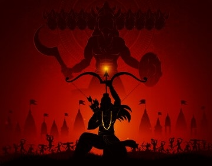
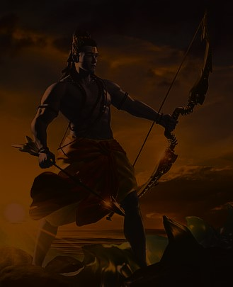
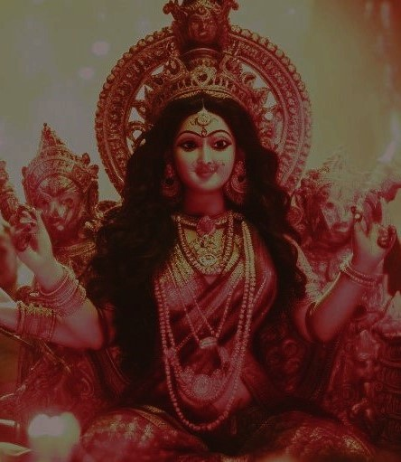

Dussehra, also known as Vijayadashami, is a major Hindu festival celebrated in India and some other South Asian countries. It typically falls in the Hindu calendar month of Ashwin, which usually corresponds to September or October in the Gregorian calendar. Dussehra marks the triumph of good over evil and has both religious and cultural significance.
Dussehra is celebrated with regional variations and customs in different parts of India. In addition to the Ramayana, some regions have their own stories and legends associated with the festival. For example, in the state of Karnataka, Dussehra is linked to the triumph of the legendary goddess Chamundeshwari over the demon Mahishasura.
Dussehra is also seen as a time for introspection and personal growth. It is common for people to resolve to overcome their inner demons and vices, symbolizing their own victory over personal shortcomings.
Dussehra, also known as Vijayadashami, is celebrated over a period of ten days, with each day having its own significance and rituals. This ten-day celebration is commonly referred to as "Navratri" or "Durga Puja" in different parts of India. Here's a brief overview of how the ten days of Dussehra are typically celebrated:
The first day marks the beginning of Navratri. It is dedicated to the worship of Goddess Shailaputri, an incarnation of Goddess Parvati. People perform rituals and prayers to seek the blessings of the goddess.
On the second day, Goddess Brahmacharini is worshipped. Devotees fast and offer prayers to seek the divine blessings for peace and happiness.
Goddess Chandraghanta is honored on this day. She is believed to symbolize bravery and courage. Devotees wear red-colored clothes and offer prayers to the goddess.
The fourth day is dedicated to Goddess Kushmanda. She is considered the creator of the universe and is worshipped for strength and prosperity.
On the fifth day, Goddess Skandamata is revered. She is the mother of Lord Kartikeya (Skanda) and represents motherly love and protection.
This day is dedicated to Goddess Katyayani, who is associated with fierce energy and valor. Devotees perform special rituals and recite prayers.
On the seventh day, people worship Goddess Kaalratri, who is depicted as a fierce and dark goddess. She is believed to destroy ignorance and remove obstacles.
The eighth day is known as Maha Ashtami, and it is considered one of the most significant days of Dussehra. It is dedicated to Goddess Mahagauri, symbolizing purity and serenity.
The ninth day is marked by worshiping Goddess Siddhidatri, who is believed to grant spiritual and mystical powers. It is also the day when Kanya Puja, or the worship of young girls, is performed.
The tenth and final day of Dussehra is celebrated with great enthusiasm. It commemorates the victory of Lord Rama over Ravana. In the evening, large effigies of Ravana, Kumbhakarna, and Meghnad are burned in open grounds, symbolizing the triumph of good over evil.
Throughout these ten days, people observe fasts, visit temples, participate in cultural events, and come together to celebrate the victory of righteousness and the triumph of good over evil. It is a time of spiritual reflection, devotion, and joyous festivities.
To get own personal or customized website at best affordable price contact: bnyathish0@gmail.com click to get in touch
OR
Fill the form we will contact you within short time

The most prominent historical and mythological event associated with Dussehra is the victory of Lord Rama over Ravana. According to the Ramayana, Ravana, the powerful demon king of Lanka, kidnapped Rama's wife, Sita. In his quest to rescue Sita and uphold dharma (righteousness), Lord Rama, along with his brother Lakshmana and the monkey-god Hanuman, waged a war against Ravana. The epic battle concluded on the tenth day (Vijayadashami), with Rama defeating Ravana and rescuing Sita. This event symbolizes the triumph of good over evil and the victory of righteousness.

In some parts of India, especially in the eastern states, Dussehra is associated with the worship of Goddess Durga during the Navratri festival. This is particularly true in West Bengal, where Dussehra is celebrated as Durga Puja. It is believed that Goddess Durga defeated the demon Mahishasura during these nine nights, leading to her victory on the tenth day, which is celebrated as Vijayadashami.
Triumph of Good Over Evil:
The central purpose of Dussehra is to commemorate and celebrate the victory
of good over evil. It symbolizes the triumph of righteousness (dharma) over unrighteousness (adharma).
The most well-known historical event associated with Dussehra is the victory of Lord Rama over the
demon king Ravana, which represents the victory of good over evil.
Unity and Community Bonding:
Dussehra fosters a sense of unity and community bonding. People come
together to celebrate the festival, whether by participating in processions, building and burning
effigies of Ravana, or attending fairs and cultural events. It strengthens social ties and promotes a
sense of togetherness.
Teaching Moral Values:
The story of Dussehra, particularly the Ramayana, contains valuable lessons about
ethics, morality, and the consequences of one's actions. Parents often narrate these stories to their
children to impart moral values and teach them about the importance of righteousness.
Personal Reflection and Renewal:
Dussehra is also a time for personal introspection and renewal. Many
people use this occasion to make resolutions for self-improvement, overcome their weaknesses, and
embark on a more virtuous path in life.
Harvest Festival:
In some parts of India, Dussehra coincides with the conclusion of the harvest season.
It is a time for farmers to celebrate the successful harvest and express gratitude for the agricultural
bounty. This aspect of Dussehra is especially prominent in regions like Punjab.
Honoring Goddess Durga:
In eastern India, particularly in West Bengal, Dussehra is celebrated as Durga
Puja, honoring Goddess Durga's victory over the demon Mahishasura. This festival involves elaborate
decorations, artistic displays, and grand processions.